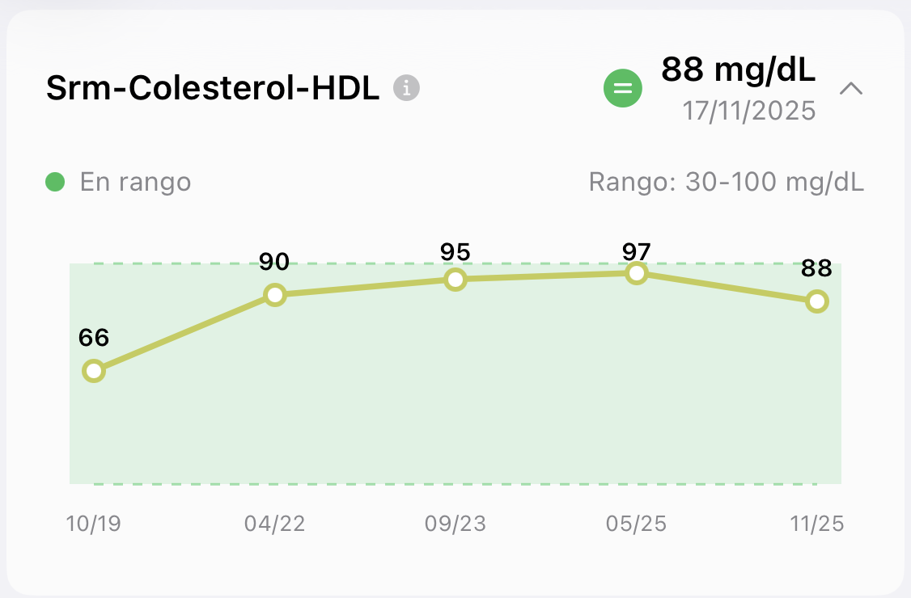
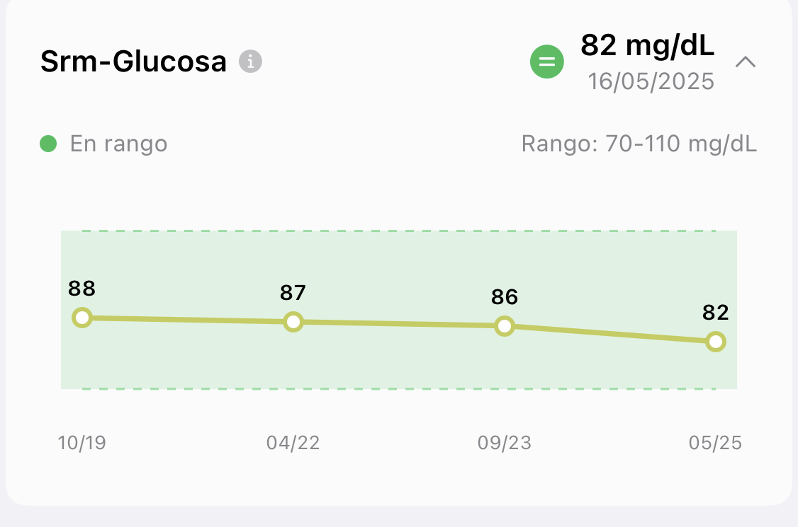

Indicadores Glucovibes
Tus analíticas, mejor cada vez.
No mires un número suelto. Mira hacia dónde va.
Desliza →
Hacemos visible lo invisible
No mires un número suelto. Mira hacia dónde va.
Desliza →

Captura real de la app Glucovibes de una Viber.

Captura real de la app Glucovibes de una Viber.
glucovibes.com